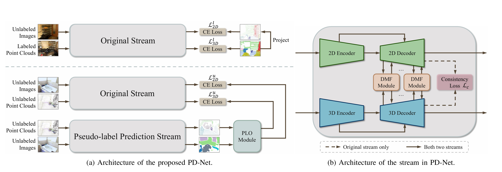
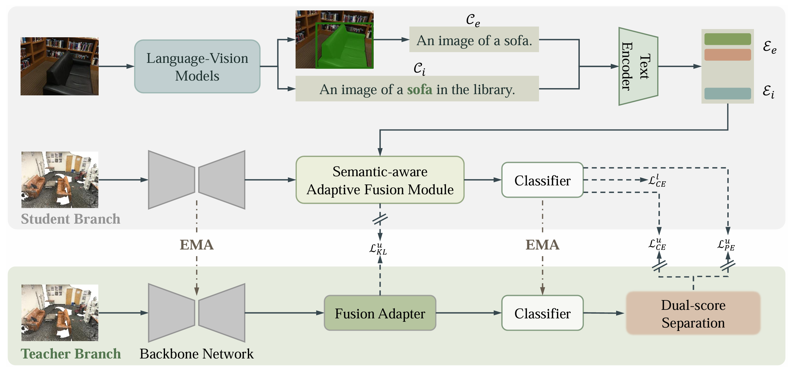
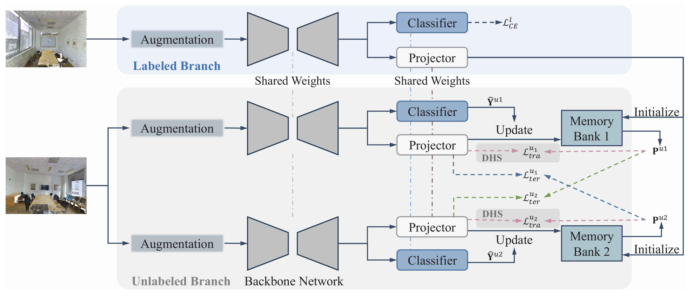
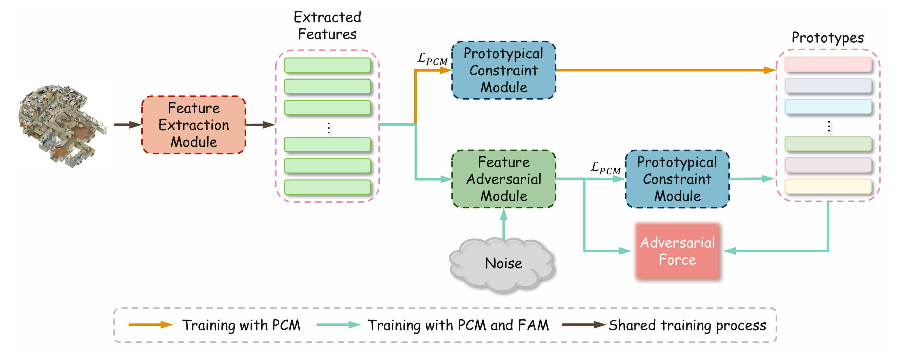

Towards Semi-Supervised Dual-modal Semantic Segmentation
IEEE Transactions on Multimedia, 2025
Jianan LiHi, welcome to my personal page. I am currently a 4th-year PhD stduent at the State Key Laboratory of Multimodal Artificial Intelligence Systems (MAIS), Institute of Automation, Chinese Academy of Sciences, advised by Prof. Qiuelei Dong. I obtained my B.Eng. degree from Sun Yat-sen University (SYSU) in 2021. My current research interests generally foucs on:
Feel free to contact me: lijianan211@mails.ucas.ac.cn |

|

IEEE Transactions on Multimedia, 2025

European Conference on Computer Vision (ECCV), 2024

IEEE/CVF Conference on Computer Vision and Pattern Recognition (CVPR), 2024

IEEE/CVF Conference on Computer Vision and Pattern Recognition (CVPR), 2023
Reviewer: CVPR (2025), ICCV (2025), NeurIPS (2025)